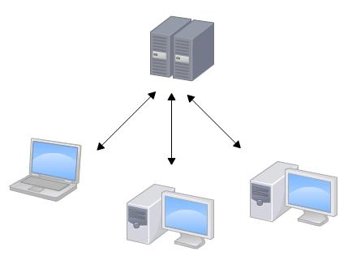

Quick Start Guide Git
Git介绍
Git是目前世界上最先进的分布式版本控制系统（没有之一）。
集中式vs分布式区别
- 集中式网络拓扑图
 - 分布式拓扑图
Git 安装
linux上安装
1 | sudo apt-get install git |
windows上安装
在Windows上使用Git，可以从官网直接下载安装程序，（网速慢的同学请从国内镜像）下载，然后按默认选项安装即可。
安装完成后，在开始菜单里找到“Git”->“Git Bash”，蹦出一个类似命令行窗口的东西，就说明Git安装成功！
安装完成后，还需要最后一步设置，在命令行输入：
1 | git config --global user.name "Your Name" |
因为Git是分布式版本控制系统，所以，每个机器都必须自报家门：你的名字和Email地址。你也许会担心，如果有人故意冒充别人怎么办？这个不必担心，首先我们相信大家都是善良无知的群众，其次，真的有冒充的也是有办法可查的。
注意git config命令的–global参数，用了这个参数，表示你这台机器上所有的Git仓库都会使用这个配置，当然也可以对某个仓库指定不同的用户名和Email地址。
创建版本库
首先，选择一个合适的地方，创建一个空目录：
1 | mkdir learngit |
第二步，通过git init命令把这个目录变成Git可以管理的仓库：
1 | git init |
把文件添加到版本库
现在我们编写一个readme.txt文件，内容如下
1 | Git is a version control system. |
第一步，用命令git add告诉Git，把文件添加到仓库：
1 | git add readme.txt |
第二步，用命令git commit告诉Git，把文件提交到仓库：
1 | git commit -m "wrote a readme file" |
版本管理
我们已经成功地添加并提交了一个readme.txt文件，现在，是时候继续工作了，于是，我们继续修改readme.txt文件，改成如下内容：
1 | Git is a "distributed" version control system. |
现在，运行git status命令看看结果：
1 | git status |
想查看具体改动哪些内容，需要用git diff这个命令看看
1 | git diff readme.txt |
添加提交修改的文件
1 | git add readme.txt |
版本回退
再次修改readme.txt文件如下：
1 | Git is a distributed version control system. |
然后尝试提交：
1 | git add readme.txt |
现在，我们回顾一下readme.txt文件一共有几个版本被提交到Git仓库里了：
版本1：wrote a readme file
1 | Git is a version control system. |
版本2：add distributed
1 | Git is a distributed version control system. |
版本3：append GPL
1 | Git is a distributed version control system. |
在实际工作中,我们用git log –pretty=oneline命令查看每次提交的改动–pretty=oneline精简格式（可选）
1 | git log --pretty=oneline |
现在如果准备把readme.txt回退到上一个版本，也就是add distributed的那个版本，怎么做呢？
先看下git回退的原理，Git的版本回退速度非常快，因为Git在内部有个指向当前版本的HEAD指针，当你回退版本的时候，Git仅仅是把HEAD从指向append GPL,改为指向add distributed：


我们可以通过git reset –hard命令实现版本回退
1 | git reset --hard HEAD^ |
HEAD表示当前版本，上一个版本就是HEAD^，上上一个版本就是HEAD^^ ，上100个版本HEAD~100，当然也可以直接通过commit id来回退到对应的版本
1 | git reset --hard 1094a |
只要有commit id 指针可以切换到任意版本，无论是回退还是恢复，有时由于回退到上一个版本后无法得之回退前的commit id，想要还原回来我们需要通过git reflog命令查找回退前的commit id
1 | git reflog |
如果还没有建议登陆到git服务器（在本地修改还没push的前提下）查看对应版本的commit id
工作区和暂存区
工作区：就是你在电脑里能看到的目录，比如我的learngit文件夹就是一个工作区(隐藏目录.git不属于工作区)
版本库：工作区有一个隐藏目录.git，这个就是Git的版本库。版本库包括 stage(暂存区)、master(分支)、head(指向master的指针)
暂存区：版本库中的stage(或者叫index)部分。
三者关系如图所示：

第一步是用git add把工作区的文件修(创建新文件也属于文件修改)改添加到stage中进去，实际上就是把件修改添加到暂存区；
第二步是用git commit提交更改，实际上就是把暂存区的所有内容提交到当前分支。
管理修改
Git管理的是修改，当你用git add命令后，在工作区的第一次修改被放入暂存区，准备提交，但是，在工作区的第二次修改并没有放入暂存区，所以，git commit只负责把暂存区的修改提交了，也就是第一次的修改被提交了，第二次的修改不会被提交。
那怎么提交第二次修改呢？你可以继续git add再git commit，也可以别着急提交第一次修改，先git add第二次修改，再git commit，就相当于把两次修改合并后一块提交了：
第一次修改 -> git add -> 第二次修改 -> git add -> git commit
总结：每次修改，如果不用git add到暂存区，那就不会加入到commit中。
撤销修改
让我们看看撤销修改应用的几个场景：
场景1：当你改乱了工作区某个文件的内容，想直接丢弃工作区的修改时，用命令git checkout – file。
场景2：当你不但改乱了工作区某个文件的内容，还添加到了暂存区时，想丢弃修改，分两步，第一步用命令git reset HEAD
场景3：已经提交了不合适的修改到版本库时，想要撤销本次提交，参考版本回退一节，不过前提是没有推送到远程库。
看图理解：
场景1: 相当于工作区(unstage changes)撤销修改
场景2: 相当于staged changes 撤销到unstage changes 然后在执行场景1，
场景3：有两种情况，
1.完全撤销Git reset –hard “commit-id” 工作区的改动全部撤销。有的改动不想撤销时这个命令是致命的。
2.安全撤销git reset –soft HEAD^相当于图中的undo只撤回当时提交，而不影响现在工作区的改动
删除文件
删除文件有两种情况：
一是确实要从版本库中删除该文件，那就用命令git rm删掉，并且git commit：
1 | git rm test.txt |
另一种情况是删错了，因为版本库里还有呢，所以可以很轻松地把误删的文件恢复到最新版本：
1 | git checkout -- test.txt |
远程仓库
请自行注册GitHub账号。由于你的本地Git仓库和GitHub仓库之间的传输是通过SSH加密的，所以，需要一点设置：
第1步：创建SSH Key。在用户主目录下，看看有没有.ssh目录，如果有，再看看这个目录下有没有id_rsa和id_rsa.pub这两个文件，如果已经有了，可直接跳到下一步。如果没有，打开Shell（Windows下打开Git Bash），创建SSH Key：
1 | ssh-keygen -t rsa -C "youremail@example.com" |
你需要把邮件地址换成你自己的邮件地址，然后一路回车，使用默认值即可，由于这个Key也不是用于军事目的，所以也无需设置密码。
如果一切顺利的话，可以在用户主目录里找到.ssh目录，里面有id_rsa和id_rsa.pub两个文件，这两个就是SSH Key的秘钥对，id_rsa是私钥，不能泄露出去，id_rsa.pub是公钥，可以放心地告诉任何人。
第2步：登陆GitHub，打开“Account settings”，“SSH Keys”页面：
然后，点“Add SSH Key”，填上任意Title，在Key文本框里粘贴id_rsa.pub文件的内容：
添加远程库
首先，登陆GitHub，然后，在右上角找到“Create a new repo”按钮，创建一个新的仓库 learngit：
目前，在GitHub上的这个learngit仓库还是空的，GitHub告诉我们，可以从这个仓库克隆出新的仓库，也可以把一个已有的本地仓库与之关联，然后，把本地仓库的内容推送到GitHub仓库。
由于我们在本地初始化的版本库所以我们用第二种方式关联远程库：
1 | git remote add origin git@github.com:whiteleibniz/learngit.git |
下一步，就可以把本地库的所有内容推送到远程库上：
1 | git push -u origin master |
由于远程库是空的，我们第一次推送master分支时，加上了-u参数，Git不但会把本地的master分支内容推送的远程新的master分支，还会把本地的master分支和远程的master分支关联起来，在以后的推送或者拉取时就可以简化命令。
从远程库克隆
上次我们讲了先有本地库，后有远程库的时候，如何关联远程库。
现在，假设我们从零开发，那么最好的方式是先创建远程库，然后，从远程库克隆。
首先，登陆GitHub，创建一个新的仓库，名字叫gitskills：
远程库已经准备好了，下一步是用命令git clone克隆一个本地库：
1 | git clone git@github.com:whiteleibniz/gitskills.git |
分支管理
分支就是科幻电影里面的平行宇宙，当你正在电脑前努力学习Git的时候，另一个你正在另一个平行宇宙里努力学习SVN。
如果两个平行宇宙互不干扰，那对现在的你也没啥影响。不过，在某个时间点，两个平行宇宙合并了，结果，你既学会了Git又学会了SVN！

分支在实际中有什么用呢？假设你准备开发一个新功能，但是需要两周才能完成，第一周你写了50%的代码，如果立刻提交，由于代码还没写完，不完整的代码库会导致别人不能干活了。如果等代码全部写完再一次提交，又存在丢失每天进度的巨大风险。
现在有了分支，就不用怕了。你创建了一个属于你自己的分支，别人看不到，还继续在原来的分支上正常工作，而你在自己的分支上干活，想提交就提交，直到开发完毕后，再一次性合并到原来的分支上，这样，既安全，又不影响别人工作。
其他版本控制系统如SVN等都有分支管理，但是用过之后你会发现，这些版本控制系统创建和切换分支比蜗牛还慢，简直让人无法忍受，结果分支功能成了摆设，大家都不去用。
但Git的分支是与众不同的，无论创建、切换和删除分支，Git在1秒钟之内就能完成！无论你的版本库是1个文件还是1万个文件。
创建与合并分支
创建分支本质上是在原有分支的上某时间点的提交上新建一个指向该提交的指针，然后在将HEAD指针指向该分支指针，原理如下图：
创建分支：
分支提交:
分支合并: git merge命令用于合并指定分支到当前分支。
删除分支：合并后分支基本没用了可以删除掉，删除分支就是把分支指针给删掉
分支操作常用命令：
查看分支：git branch
创建分支：git branch <name>
切换分支：git checkout <name>
创建+切换分支：git checkout -b <name>
合并某分支到当前分支：git merge <name>
删除分支：git branch -d <name>
解决冲突
冲突产生的原因以及如何解决冲突：
在主分支和分支中同时对一个文件进行了修改并且都commit了，这时git无法进行自动合并，需要把git合并失败的文件手动编辑为我们希望的内容。
执行合并命令时git给出的提示：
1 | git merge feature1 |
使用git status 查看冲突的具体原因：
1 | git status |
查看冲突文件readme的内容：
1 | Git is a distributed version control system. |
Git用<<<<<<<，=======，>>>>>>>标记出不同分支的内容，我们修改如下后保存：
1 | Creating a new branch is quick and simple. |
执行提交：
1 | git add readme.txt |
分支管理策略
在实际开发中，我们应该按照几个基本原则进行分支管理：
首先，master分支应该是非常稳定的，也就是仅用来发布新版本，平时不能在上面干活；
那在哪干活呢？干活都在dev分支上，也就是说，dev分支是不稳定的，到某个时候，比如1.0版本发布时，再把dev分支合并到master上，在master分支发布1.0版本；
你和你的小伙伴们每个人都在dev分支上干活，每个人都有自己的分支，时不时地往dev分支上合并就可以了。
所以，团队合作的分支看起来就像这样：

前面我们使用了git自动合并机制(Fast forward模式),在这种模式下，删除分支后，会丢掉分支信息。一般情况下我们在合并分支时使用 –no-ff 参数来禁用Fast forward
1 | git merge --no-ff -m "merge with no-ff" dev |
因为本次合并要创建一个新的commit，所以加上-m参数，把commit描述写进去。
合并后，我们用git log看看分支历史：
1 | git log --graph --pretty=oneline --abbrev-commit |
可以看到，不使用Fast forward模式，merge后就像这样：

合并分支时，加上–no-ff参数就可以用普通模式合并，合并后的历史有分支，能看出来曾经做过合并，而fast forward合并就看不出来曾经做过合并。
Bug分支
当你接到一个修复一个代号101的bug的任务时，很自然地，你想创建一个分支issue-101来修复它，但是，等等，当前正在dev上进行的工作还没有提交：
1 | git status |
并不是你不想提交，而是工作只进行到一半，还没法提交，预计完成还需1天时间。但是，必须在两个小时内修复该bug，怎么办？
幸好，Git还提供了一个stash功能，可以把当前工作现场“储藏”起来，等以后恢复现场后继续工作：
1 | git stash |
工作区是干净的，刚才的工作现场存到哪去了？用git stash list命令看看：
1 | git stash list |
用git stash pop，恢复的同时把stash内容也删了：
1 | git stash pop |
你可以多次stash，恢复的时候，先用git stash list查看，然后恢复指定的stash，用命令：
1 | git stash apply stash@{0} |
修复bug时，我们会通过创建新的bug分支进行修复，然后合并，最后删除；
当手头工作没有完成时，先把工作现场git stash一下，然后去修复bug，修复后，再git stash pop，回到工作现场。
Feature分支
添加一个新功能时，你肯定不希望因为一些实验性质的代码，把主分支搞乱了，所以，每添加一个新功能，最好新建一个feature分支，在上面开发，完成后，合并，最后，删除该feature分支。
开发一个新feature，最好新建一个分支；
如果要丢弃一个没有被合并过的分支，可以通过git branch -D <name>强行删除。
多人协作
当你从远程仓库克隆时，实际上Git自动把本地的master分支和远程的master分支对应起来了，并且，远程仓库的默认名称是origin。
要查看远程库的信息，用git remote：
1 | git remote |
或者，用git remote -v显示更详细的信息：
1 | git remote -v |
上面显示了可以抓取和推送的origin的地址。如果没有推送权限，就看不到push的地址。
多人协作的工作模式通常是这样：
首先，可以试图用git push origin <branch-name>推送自己的修改；
如果推送失败，则因为远程分支比你的本地更新，需要先用git pull试图合并；
如果合并有冲突，则解决冲突，并在本地提交；
没有冲突或者解决掉冲突后，再用git push origin <branch-name>推送就能成功！
如果git pull提示no tracking information，则说明本地分支和远程分支的链接关系没有创建，用命令git branch –set-upstream-to <branch-name> origin/<branch-name>。
这就是多人协作的工作模式，一旦熟悉了，就非常简单。
查看远程库信息，使用git remote -v；
本地新建的分支如果不推送到远程，对其他人就是不可见的；
从本地推送分支，使用git push origin branch-name，如果推送失败，先用git pull抓取远程的新提交；
在本地创建和远程分支对应的分支，使用git checkout -b branch-name origin/branch-name，本地和远程分支的名称最好一致；
建立本地分支和远程分支的关联，使用git branch –set-upstream branch-name origin/branch-name；
从远程抓取分支，使用git pull，如果有冲突，要先处理冲突。
rebase
- rebase操作可以把本地未push的分叉提交历史整理成直线；
- rebase的目的是使得我们在查看历史提交的变化时更容易，因为分叉的提交需要三方对比。
标签管理
发布一个版本时，我们通常先在版本库中打一个标签（tag），这样，就唯一确定了打标签时刻的版本。将来无论什么时候，取某个标签的版本，就是把那个打标签的时刻的历史版本取出来。所以，标签也是版本库的一个快照。
Git的标签虽然是版本库的快照，但其实它就是指向某个commit的指针（跟分支很像对不对？但是分支可以移动，标签不能移动），所以，创建和删除标签都是瞬间完成的。
Git有commit，为什么还要引入tag？
“请把上周一的那个版本打包发布，commit号是6a5819e…”
“一串乱七八糟的数字不好找！”
如果换一个办法：
“请把上周一的那个版本打包发布，版本号是v1.2”
“好的，按照tag v1.2查找commit就行！”
所以，tag就是一个让人容易记住的有意义的名字，它跟某个commit绑在一起。
创建标签
在Git中打标签非常简单，首先，切换到需要打标签的分支上：
1 | git branch |
然后，敲命令git tag <name>就可以打一个新标签：
1 | git tag v1.0 |
可以用命令git tag查看所有标签：
1 | git tag |
在任意时间点打标签git log找到commit id，然后打上就可以了：
1 | git tag v0.9 f52c633 |
注意，标签不是按时间顺序列出，而是按字母排序的。可以用git show <tagname>查看标签信息：
1 | git show v0.9 |
操作标签
如果标签打错了，也可以删除：
1 | git tag -d v0.1 |
如果要推送某个标签到远程，使用命令git push origin <tagname>：
1 | git push origin v1.0 |
或者，一次性推送全部尚未推送到远程的本地标签：1
2
3
4 git push origin --tags
Total 0 (delta 0), reused 0 (delta 0)
To github.com:michaelliao/learngit.git
* [new tag] v0.9 -> v0.9
如果标签已经推送到远程，要删除远程标签就麻烦一点，先从本地删除：1
2 git tag -d v0.9
Deleted tag 'v0.9' (was f52c633)
然后，从远程删除。删除命令也是push，但是格式如下：1
2
3 git push origin :refs/tags/v0.9
To github.com:michaelliao/learngit.git
- [deleted] v0.9